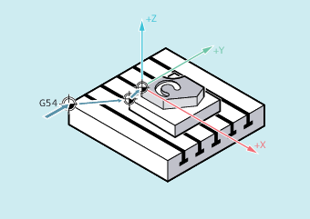

Im NC-Programm kann ein Frame einem anderen Frame zugewiesen oder Frames miteinander verkettet werden.
Frameverkettungen eignen sich z. B. für die Beschreibung mehrerer Werkstücke, die auf einer Palette angeordnet sind und in einem Fertigungsablauf bearbeitet werden sollen.
Für die Beschreibung von Palettenaufgaben könnten die Framekomponenten z. B. nur bestimmte Teilwerte enthalten, durch deren Verkettung verschiedene Werkstücknullpunkte generiert werden.
| Programmconde | Kommentar |
|---|---|
| DEF FRAME EINSTELLUNG_1 | ; Definition einer lokalen Framevariablen |
| EINSTELLUNG_1 = CTRANS(X,10) | ; Zuweisung des Ergebnisses einer Funktion an die Framevariable |
| $P_PFRAME = EINSTELLUNG_1 | ; Zuweisung der Framevariablen an den Aktuellen Frame |
| DEF FRAME EINSTELLUNG_4 | ; Definition einer lokalen Framevariablen |
| EINSTELLUNG_4 = $P_PFRAME | ; Zwischenspeicherung des Aktuellen Frames in der Framevariablen |
| ... | |
| $P_PFRAME = EINSTELLUNG_4 | ; Rücklesen des Aktuellen Frames aus der Framevariablen |
Die Frames werden in der programmierten Reihenfolge durch den Operator : miteinander verkettet. Die Framekomponenten wie z. B. Verschiebungen, Drehungen usw. werden nacheinander additiv ausgeführt.
| Programmconde | Kommentar |
|---|---|
| $P_IFRAME = $P_UIFR[15] : $P_UIFR[16] | ; Zuweisung des Ergebnis-Frames aus der Verkettung der ; beiden Einstellbaren Datenhaltungsframes an den aktiven; Einstellbaren Gesamt-Frame.; Anwendungsbeispiel:; $P_UIFR[15]: Verschiebung; $P_UIFR[16]: Drehung |
| $P_UIFR[3] = $P_UIFR[4] : $P_UIFR[5] | ; Zuweisung des Ergebnis-Frames aus der Verkettung der ; beiden Einstellbaren Datenhaltungsframes an einen ; anderen Einstellbaren Datenhaltungsframe |
Siehe auch:
Direkte Werte zuweisen (Achswert, Winkel, Maßstab)
Framekomponenten lesen und verändern (TR, FI, RT, SC, MI)
Definition von Framevariablen (DEF FRAME)